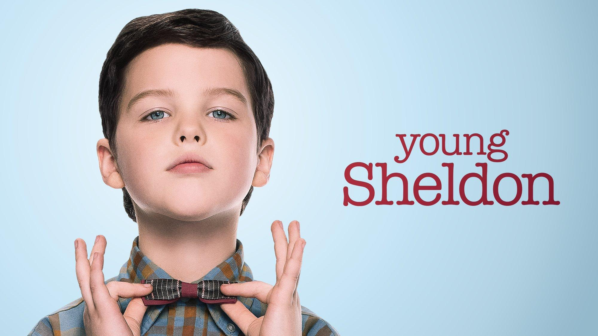

Детство Шелдона |
|
|  | ОписаниеГлавный герой «Детства Шелдона» — девятилетний Шелдон Купер, один из персонажей ситкома «Теория большого взрыва». Мальчик живет в Восточном Техасе, ходит в обычную школу и пытается вписаться в окружающий его мир. Но из-за высоких интеллектуальных способностей Шелдону не удается нормально взаимодействовать со сверстниками. |
Интересный фактАктриса Зои Перри, которая играет мать молодого Шелдона на самом деле является дочерью актрисы Лори Меткаф, которая играет мать взрослого Шелдона Купера в сериале «Теория большого взрыва» |